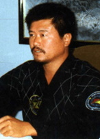

yanghumkwan
Associação portuguesa de hapkido com mais de 25 anos de história em portugal
Hapkido Yanghumkwan
O Mestre Jong Baek Won é o codificador do Yang Hum Kwan Hapkido, nasceu no ano de 1959, em Chung Nam, Coreia do Sul. Muito jovem, começou a praticar Judo (desporto muito popular na Coreia), até obter a graduação de 2° DAN. Estuda numa das melhores Academias Militares do momento, durante o tempo que estuda, toma contacto com o Taekwondo e Kendo, arte que não deixa de praticar até ingressar no exército.
No primeiro ano do serviço militar regular, onde tem pela primeira vez contacto com o Hapkido, e nos dois últimos anos da sua vida militar, é destinado aos Corpos Especiais Antiterroristas Aéreos, onde o Hapkido se converte na Arte indispensável para sobreviver.
Actualmente o Mestre Jong Baek Won tem a grau de Kwan Jang Nim (Grão Mestre)
- Cinto Negro-8° Dan de Hapkido - Mestre internacional de Hapkido
- Cinto Negro-5° Dan de Taekwondo - Mestre internacional de Taekwondo
- Cinto Negro-2° DAN de Judo, assim como um grande conhecedor em Kum-Do e Kum-Shu.
Sua forma ou carácter aberto e cordial faz dele uma pessoa reconhecida, muito querida entre os seus alunos.
Hapkido em Portugal
O Hapkido foi introduzido em Portugal em 1995 pela mão do Grão Mestre Paulo Reis, actualmente 6°DAN. A sua introdução teve lugar no Sport Lisboa e Benfica, o primeiro Dojang de Hapkido em Portugal.
Decorria o ano de 1995 quando o Sport Lisboa e Benfica, pela mão do Prof. Carlos Garcia, apresentou a proposta ao Grão Mestre Paulo Reis (na altura responsável pela classe de Taekwondo) de iniciar uma classe de Defesa Pessoal. O Grão Mestre Paulo Reis sentiu uma necessidade de formação específica nessa área e dirigiu-se a Espanha para iniciar a sua formação com o Mestre António Camino na altura 5º Dan de Hapkido. Após seis meses de permanentes deslocações a Espanha, para treino e formação intensiva, o Grão Mestre Paulo Reis inicia o ensino do Hapkido nas instalações do Estádio da Luz, em Setembro do mesmo ano.
Os primeiros alunos, eram na sua maioria ex-praticantes de Taekwondo, e de outras artes marciais como o Judo, Ju-Jitsu, Aikido, Kick-boxing, etc. e ficaram deliciados com a eficácia desta arte de defesa-pessoal. As primeiras alunas surgiram em 1996, algumas por curiosidade outras pela necessidade de aprender a defesa pessoal.
Segundo o Grão Mestre Paulo Reis a divulgação desta modalidade era feita através de um folheto contendo quais as modalidades e os seus horários, mas uma das principais armas de propaganda foram os estágios inter-estilos, ou os estágio internacionais, que deram a conhecer esta arte marcial a outros praticantes.
O hapkido Yang Hum Kwan, foi elevado ao seu expoente máximo através do estudo e exímia habilidade do Grão Mestre António Miguel Camino Olea 6º DAN. O Grão Mestre António Camino, sempre deu o seu apoio, de modo incondicional ao desenvolvimento de Hapkido Yang Hum Kwan em Portugal. Em Portugal, dirigiu 6 Estágios Internacionais, de 1996 a 2000, trazendo em 1998 o Fundador do YHK, Mestre Jong Baek Won. Em 1997 efectuou os primeiros exames de Cinto Negro, e em 1999 ministrou o 1º Curso de Professores.
Associação Portuguesa de Hapkido Yang Hum Kwan
A pouco e pouco o Hapkido foi ganhando o seu espaço em Portugal e no final de um ano em Portugal contava com cerca de 30 praticantes.
Surgiu então a necessidade de arranjar um entidade oficial que organizasse, e gerisse. É então constituída a 2 de Julho de 1996, a Associação Portuguesa De Hapkido Yang Hu Kwan, uma associação desportiva, que tem como objectivo a prática e o desenvolvimento das modalidades que congrega no seu âmbito de acção.
A partir dessa data a Yang Hum Kwan Hapkido é oficialmente representado em Portugal, pela Associação Portuguesa de Hapkido Yang Hum Kwan, que se encontra filiada na International Yang Hum Kwan Hapkido Association e na Federação Portuguesa de Taekwondo.
Esta Associação ministra cursos de Defesa Pessoal a agentes de Ensino de qualquer Arte Marcial, e possui programas especialmente vocacionados para forças militares e policiais.
Possui Departamentos Técnicos, cujos responsáveis, possuem formação específica na área. Os Departamentos dão apoio à prática da modalidade nos centros filiados, sendo coordenados pelo Director Técnico Mestre Paulo Reis. Ministra Cursos de aperfeiçoamento, e organiza anualmente Estágios com o objectivo de proporcionar a actualização de conhecimentos, bem como o contacto com os melhores Mestres e praticantes desta Arte, trabalhando para que a divulgação e consequente prática em Portugal seja cada vez mais efectiva.
Desde a introdução do Hapkido em Portugal, foram formados inumeros cinturões negros e muitos outros puderam experienciar esta arte e ter contacto com uma arte marcial unica.